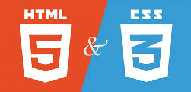
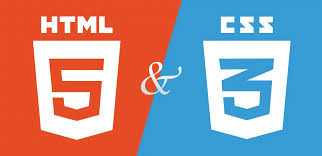

1. HTML ve CSS ile Web Geliştirme
HTML ve CSS, bir web sitesinin iskeletini ve görünümünü oluşturmak için kullanılan temel teknolojilerdir.
- Html yapıyı oluşturur
- CSS görselliği sağlar
Daha fazla bilgi için Wikipedia sitesine göz atabilirsiniz.
HTML ve CSS, bir web sitesinin iskeletini ve görünümünü oluşturmak için kullanılan temel teknolojilerdir.
Daha fazla bilgi için Wikipedia sitesine göz atabilirsiniz.
JavaScript, web sayfalarına hareket, etkileşim ve mantık kazandıran bir programlama dilidir.

Daha fazla bilgi için Wikipedia sitesine göz atabilirsiniz.
Git, yazılım geliştirme sürecinde kodların takip edilmesini sağlayan bir versiyon kontrol sistemidir. GitHub ise bu kodları çevrimiçi paylaşmayı kolaylaştırır.